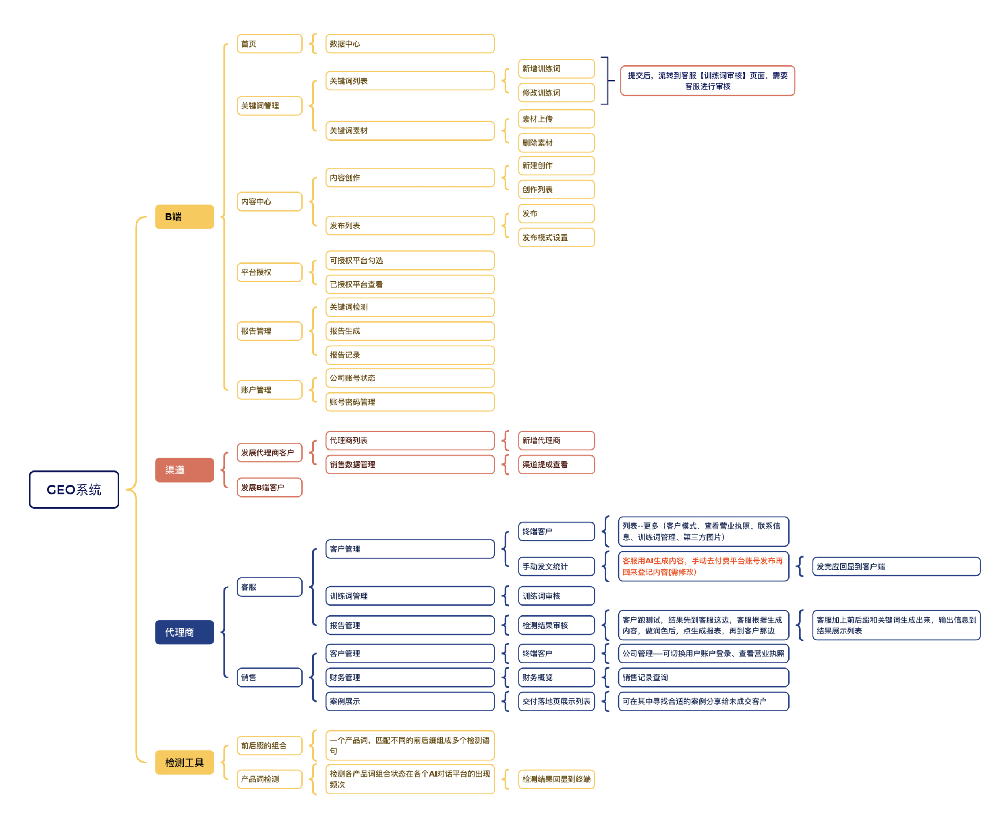
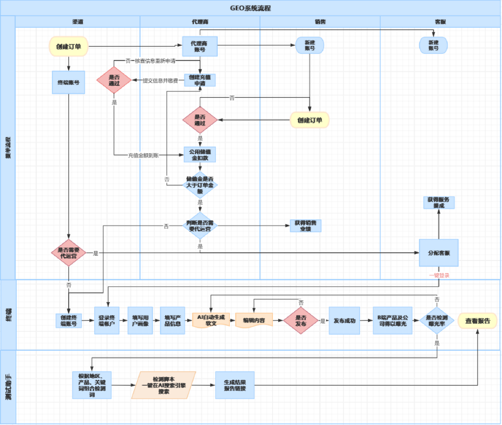

AI / SAAS · VIBE CODING · 产品 + UI
GEO 品牌可见度优化平台帮你的品牌在 AI 时代被看见 —— 从内容到监测，一站式工具平台
面向中小企业及 GEO 代理商的品牌 AI 可见度优化 SaaS：企业使用自己的自媒体账号发布内容，通过平台完成关键词管理、AI 优化内容生成、多平台分发、AI 可见度监测和效果报告。
— 市场痛点 —
PAIN POINTS
AI 搜索时代，品牌面临的新困境。
搜索行为从传统搜索引擎转向 AI 对话，传统 SEO 方法论失效，品牌在 AI 回答中完全不可见。
“用户在 AI 里问不到我们”企业不知道如何创作「AI 引用友好型」内容，缺乏 Answer-First 结构、Schema 标记等专业能力。
“内容发了，AI 不引用”内容需手动复制到多个自媒体平台，操作重复、易出错、无法统一管理。
“一篇文章要发七遍”无法知道品牌是否被 AI 引用、在哪些平台被提及、趋势如何变化。
“投入了，看不到效果”— 核心功能 —
CAPABILITY MATRIX
关键词管理
训练词分类管理、AI 机会词发现，按行业/地区/产品词多维配置，自动计算 GEO 可见度评分。
AI 内容生成
分步向导式创作、Answer-First 结构、5 种内容类型、GEO 内容评分与一键优化。
多平台发布
7 大自媒体平台一键分发、平台授权管理、定时发布、发布风控保护。
AI 可见度监测
每日自动监测 8 大 AI 平台，PC+移动端双 UA 检测，提及截图存证、引用片段高亮。
报告中心
动态仪表盘、公开分享链接、自动周报、PDF/Excel 导出、趋势分析与优化建议。
产品竞争优势
客户使用自己的账号发布，内容资产完全归属客户，避免代运营模式的账号安全风险。
内置 Answer-First 结构、Schema 自动标记、FAQ 区块生成，发布前 GEO 评分显著提升被引用概率。
每条提及均保存引用片段与完整截图，数据可追溯、可审计。
无限子客户管理、数据隔离、白标定制，为代运营公司提供可直接转售的基础设施。
发布频率控制、行为拟人化、违禁词扫描、AES-256 加密存储、完整操作日志。
— 设计推导 —
DESIGN PROCESS


— 系统实拍 —
SYSTEM SNAPSHOTS
平台官网与总后台管理系统真实运行界面，点击可放大查看。